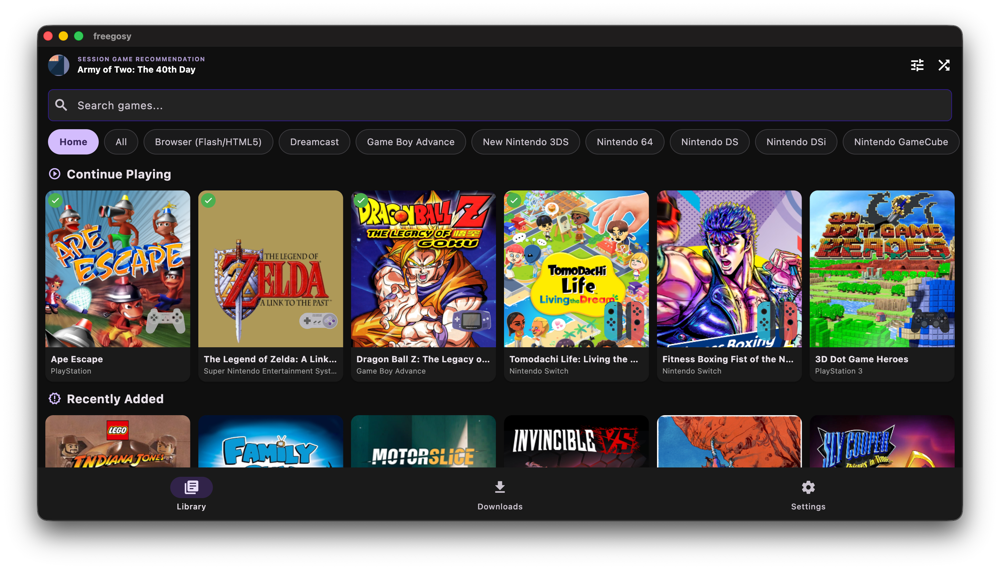
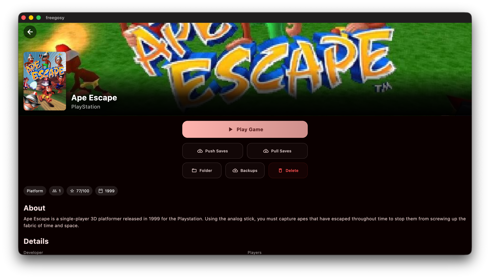

Browse, download and launch your games in the emulator of your choice, with saves that follow you between machines. Free for Windows, macOS and Linux (including Steam Deck).
Download latest release Install guide

Browse your whole library with server-side pagination, filters, offline metadata cache, and RomM 4.9 per-device saves and play sessions.
Saves and optional save states sync both ways, with backups, conflict prompts and a Resume Game button.
Download, update and launch emulators from Settings. 197 RetroArch cores with per-platform and per-game choice.
BIOS files come from RomM and land in the right folder for every installed emulator.
Connect once and RetroArch, PCSX2, PPSSPP and Dolphin sign in automatically.
Controller support, fullscreen mode, cover size slider, grid and list layouts, EmuDeck and RetroDECK presets.
A headless mode lists, downloads and launches games from the command line, with JSON output.
Built-in updates with Stable, pre-release and nightly channels.
| Emulator | Platforms | Save sync |
|---|---|---|
| RetroArch | 197 cores | Full |
| DuckStation, PCSX2, PPSSPP | PS1, PS2, PSP | Full |
| Ryujinx, Eden | Switch | Full |
| mGBA, Azahar | GBA, 3DS | Full |
| Dolphin, melonDS, Cemu, RPCS3, Xenia, Ares | GameCube/Wii, DS, Wii U, PS3, Xbox 360, multi | Partial |
| ScummVM, Windows native | Point-and-click, PC | Launch only / partial |
Windows installer, macOS disk image, Linux AppImage and tarball, an Arch PKGBUILD and a Nix flake are on the releases page. Freegosy is open source and always free; if it helps you, you can sponsor the project.